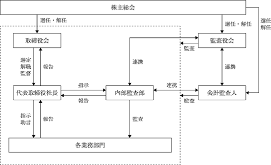

該当事項はありません。
該当事項はありません。
③【その他の新株予約権等の状況】
該当事項はありません。
該当事項はありません。
(注) １．2020年３月16日開催の取締役会決議において、2020年８月１日付で普通株式１株につき２株の割合
で株式分割を行っております。
2024年１月31日現在
(注) 自己株式387株は「個人その他」に3単元、「単元未満株式の状況」に87株含まれております。
2024年１月31日現在
（注）発行済株式（自己株式を除く）の総数に対する所有株式数の割合は、小数点以下第３位を切り捨てています。
2024年１月31日現在
(注) 「単元未満株式」欄の普通株式には、当社所有の自己株式 87株が含まれています。
2024年１月31日現在
該当事項はありません。
該当事項はありません。
（注）当期間における保有自己株式数には、2024年４月１日から有価証券報告書提出日までの単元未満株式の
買取りによる株式数は含めていません。
当社は成長過程にあり、内部留保を充実し財務体質の強化を図ることと、及び企業規模を拡大し更なるサービスの開発、新規事業の立ち上げを行うことが重要であると考えています。同時に、株主に対する利益還元も重要な経営課題であると認識しており、財政状態等を勘案し、2024年１月期の配当は１株当たり18円としました。
また、上記の基本方針に基づき、現金預金の増加状況や業績予想等を勘案し、2025年１月期の期末配当予想（基準日：2025年１月31日）は、３円増配し１株当たり21円とする予定です。
なお、当社は、会社法第454条第５項に基づき、取締役会の決議により毎年７月31日を基準日として中間配当を行うことができる旨を定めておりますが、剰余金の配当は期末配当の年１回を基本方針としています。また、配当決定機関は、中間配当は取締役会、期末配当は株主総会としています。
(注) 基準日が当事業年度に属する剰余金の配当は、以下のとおりです。
(コーポレート・ガバナンスに関する基本的な考え方)
当社は、事業活動を通じて企業価値の向上と株主への利益還元を図り、ステークホルダーに対して説明責任を果たすため、経営の透明性、コンプライアンスを確保することが信頼維持の基本であることを認識し、業務執行における監視体制を整備するとともに、適切な情報開示等を行っています。
当社は、企業倫理とコンプライアンスの重要性を認識し、経営の透明性・公平性を高めるべくコーポレート・ガバナンス強化を企図した、以下の体制を構築しています。
当社においては、当社事業に精通した取締役を中心とする取締役会が経営の基本方針や重要な業務の執行を自ら決定し、強い法的権限を有する監査役が独立した立場から取締役の職務執行を監査する体制が、経営の効率性と健全性を確保するために有効であると判断し、監査役会設置会社を採用しています。

取締役会は、代表取締役社長 村橋純雄を議長とし、取締役４名(うち社外取締役１名)で構成されています。監査役３名(うち社外監査役２名)の出席の下、原則月１回開催される定時取締役会の他、必要に応じて臨時取締役会を開催し、当社の重要な経営方針の決定、業務執行の監督、業務執行状況の報告等を行っています。また、各取締役との間で活発な議論及び意見交換がなされ、監査役も適宜意見を述べております。
なお、当社は独立性を有する社外取締役１名を独立役員に指定しています。
監査役会は、常勤監査役 小野寺泰を議長とし、監査役３名（うち社外監査役２名）で構成されています。監査役会は、原則月１回定期的に開催されますが、必要に応じて臨時に開催される場合もあります。当社では、各監査役が公正かつ客観的視点をもって、実態を正確に把握し、予防監査の視点から各種リスク発生の未然防止・危機対応の体制整備に向け、法令・諸ルール遵守等のコンプライアンスの徹底を図り、一層の監査機能の充実に注力することにより、企業の健全な発展が実現すると考えています。また、常勤監査役は取締役会はもとより、その他重要会議にも参加し、取締役の執務状況をチェックしています。なお、当社は、独立性を有する社外監査役２名を独立役員に指定しています。
当社は、有限責任監査法人トーマツとの間で監査契約を締結し、金融商品取引法第193条の２第１項の規定に基づく監査を受けており、適時・適切な監査を実施しています。
代表取締役直轄の内部監査部（専任者１名で構成）が厳正中立の立場で各業務部門の業務監査を実施し、法令及び社内規程の遵守の観点に基づき適切な指導を行うとともに、監査役と緊密な連携を保ち、活発なコミュニケーションを図ることにより、効率的かつ効果的な監査を行っています。
当社は、経営が誰のために行われているのかを明らかにし、株主の視点に立って、経営の効率性や経営の公平性をチェックすることをコーポレート・ガバナンスの大原則と考えており、コンプライアンス体制並びにリスク管理体制を有効に機能させ、その体制強化を図るため、内部統制システムの構築・運用に関する以下の基本方針を、取締役会決議により定めています。
各取締役の業務執行並びに経営意思決定に係る情報の保存及び管理に関し、以下の体制を継続的に維持し、必要に応じて修正するものとする。
ⅰ 取締役会並びに各種会議の議事録に関し、取締役会及び監査役会における監査体制を確保するために、検索、閲覧しやすいファイリングシステムを維持するものとする。
ⅱ 代表取締役が決裁する稟議書・決裁書は、取締役会及び監査役会における監査体制を確保するために、検索、閲覧しやすいファイリングシステムを維持する。
ⅲ 取締役会及び各種会議の報告事項・決議事項については、経営環境に合わせて適宜見直すこととする。
ⅳ 稟議書、議事録、会議付議資料の取扱いについては、文書保管管理規程等に定める。
当社のリスクマネジメント体制(リスク回避のための体制)及び危機管理体制(危機が健在化した場合の体制)の強化のため、以下の体制を継続的に維持し必要に応じて修正するものとする。
ⅰ 管理部における事業計画の立案及び進捗管理、内部監査部における実地監査において、事業リスクを考慮したチェック体制を維持する。
ⅱ 当社は、平素のリスク管理意識の高揚とリスク防止体制を構築することを目的に危機管理規程を制定し、リスク管理指針を明確にする。
ⅲ 当社は、危機管理規程に基づき、リスク管理委員会活動、緊急対策本部の設置等、リスクに対する組織的対応を実施するとともに、運用状況のモニタリング体制を構築する。
ⅳ 当社は、個人情報相談窓口等外部からの情報フィードバック窓口を設置し、フィードバック情報の分析体制を構築する。
ⅴ モニタリング結果に関する取締役会への報告体制を構築する。
当社の取締役の業務執行並びに経営意思決定に関する職務執行が効率的に行われることを確保するため、以下の体制を継続的に維持し必要に応じて修正するものとする。
ⅰ 当社の事業計画立案に際して、各取締役の役割、責任を明らかにし、予算統制並びに監査役監査におけるモニタリングを容易にする。また、計画の実行可能性の確保のため、要員・資金等の経営資源を適正に配分・再配分することとする。
ⅱ 当社の役職員の業務執行に関しては、職務責任一覧表及び各種業務規程に準拠して行い、経営環境の変化に合わせて規程のメンテナンスを行うものとする。
ⅲ 当社の事業計画と目標管理制度のリンケージ及び目標進捗チェック体制を確保し、全役職員が経営目標に邁進する体制を構築する。
ⅳ 当社の取締役の職務執行の支援体制として、必要に応じて弁護士、弁理士、公認会計士、税理士、社会保険労務士等、社外の専門家との相談体制を確保するものとする。
当社のコンプライアンス体制の強化のため、以下の体制を継続的に維持し必要に応じ修正するものとする。
ⅰ 当社における行動規範の浸透・普及活動を推進し、定期的に法令・定款の遵守状況をモニタリングするリスク管理委員会を設置する。当委員会の委員長は代表取締役とする。
ⅱ コンプライアンス違反の抑止体制を構築することを目的に当社のコンプライアンスに関する規程を制定し、コンプライアンス管理指針を明確にするとともに、コンプライアンスに関する規程の遵守状況をリスク管理委員会及び内部監査等でモニタリングする体制を構築する。
監査役の職務を支援するため、以下の体制を継続的に維持し必要に応じて修正するものとする。
ⅰ 内部統制システムの運用チェック部門である内部監査部は監査役監査に全面的に協力するものとする。
ⅱ 監査役会から会社法施行規則第100条第３項第１号に関する要求が為された場合には、監査役会の意見を尊重し、速やかに責任者を配置するものとする。
監査役の職務を補助すべき使用人の取締役からの独立性及び当該使用人に対する指示の実効性の確保に関し、以下のように取り決める。
ⅰ 監査役会の依頼に基づき、監査役の職務を補助すべき使用人を選任する場合には、当該使用人は監査役の指揮命令下に置くものとし、取締役及びその使用人の指揮命令は受けないものとする。
ⅱ 監査役の職務を補助すべき使用人が他の業務を兼務すること、当該使用人の人事考課、人事異動に関しては、監査役の同意を得るものとする。
監査役への報告体制の確立のため、以下の体制を継続的に維持し必要に応じて修正するものとする。
ⅰ 監査役は、社内の全ての会議、委員会に出席し、また社内の全ての資料を閲覧し意見を述べることができる。その際、監査役から報告依頼等が為された場合、役職員は監査役の要求に協力しなければならない。
ⅱ 役職員は、監査役に以下の内容を含む重要事項を定期的に報告しなければならない。
・内部監査結果
・予算統制結果
・コンプライアンス体制の運用結果
・リスク管理体制の運用結果
・外部からのフィードバック情報
・会計監査人、証券取引所、監督官庁からの依頼事項、提出文書
ⅲ 当社の取締役・監査役及び使用人又は、これらの者から報告を受けた者は、以下の事項を監査役に報告するものとする。
・当社における法令違反その他コンプライアンスに関する重要な事項
・会社に著しい損害を及ぼす恐れのある事項
・内部通報制度の運用及び通報の内容
ⅳ 当社の監査役へ報告を行った役職員に対し、当該報告をしたことを理由として不利な取扱いを一切行わないものとする。
ⅰ 当社は、監査役がその職務の執行について、会社に対し、会社法第388条に基づく費用の前払等の請求をしたときは、当該請求に係る費用又は債務が当該監査役の職務の執行に必要でないと認められた場合を除き、速やかに当該費用又は債務を処理する。
ⅱ 当社は、監査役の職務の執行について生ずる費用等を支弁するため、毎年、予算を計上するものとする。
監査役監査が実効的に行われることを確保するための体制は、以下のとおりとする。
ⅰ 監査役監査が円滑に行われるように、取締役は、監査役監査の重要性を認識し、各部門長及び社員に協力体制を指導する。
ⅱ 監査役会と各取締役は定期的に意見交換の場を設定するものとする。
当社は、会社法第426条第１項の規定により、任務を怠ったことによる取締役（取締役であった者を含む）および監査役（監査役であった者を含む）の損害賠償責任を法令の限度額において、取締役会の決議によって免除することができる旨を定款に定めています。
また、会社法第427条第１項の規定により、業務執行取締役等を除く取締役および監査役との間で、任務を怠ったことによる損害賠償責任を法令が定める額に限定する契約を締結することができる旨を定款に定めています。
これは、取締役および監査役が職務を遂行するにあたり、その能力を十分に発揮して、期待される役割を果たしうる環境を整備することを目的とするものです。
ニ．役員等賠償責任保険契約の内容の概要
当社は、取締役、監査役を被保険者とする、会社法第430条の３第１項に規定する役員等賠償責任保険契約を保険会社との間で締結しており、被保険者がその職務の執行に関し責任を負うこと又は当該責任の追及に係る請求を受けることによって生ずることのある損害を填補することとしております。但し、故意又は重過失に起因する損害賠償請求は上記の保険契約に含まれておりません。なお、保険料は全額会社が負担しております。
当社の取締役は10名以内とする旨を定款に定めております。
当社は、取締役の選任の決議について、議決権を行使することができる株主の議決権の３分の１以上を有する株主が出席し、その議決権の過半数をもって行う旨及び選任決議は累積投票によらない旨を定款に定めています。
当社は、会社法第165条第２項の規定により、取締役会の決議によって自己株式を取得できる旨を定款に定めております。これは、資本政策の遂行にあたり必要に応じて機動的に自己株式を取得できるようにすることを目的とするものです。
また、当社は、会社法第426条第１項の規定により、任務を怠ったことによる取締役(取締役であった者を含む)及び監査役(監査役であった者を含む)の損害賠償責任を、法令の限度において、取締役会の決議によって免除することができる旨を定款に定めております。これは、取締役及び監査役が期待される職務を適切に行えるようにすることを目的とするものであります。
また、当社は、取締役会の決議により中間配当を実施することができる旨を定款に定めております。これは株主への機動的な利益還元を行えるようにすることを目的にしております。
⑤ 取締役会の活動状況
取締役会における具体的な検討内容は、法令及び定款に定められた事項のほか、経営方針、経営戦略、予算、業績、重要な業務執行、重要な組織・人事及びコーポレートガバナンス等です。
また、当事業年度において取締役会は13回開催されており、個々の役員の出席状況は次のとおりです。
① 役員一覧
男性
(注) １．取締役 石田敦信は、社外取締役です。
２．監査役 中田秀幸及び土居明史は社外監査役です。
３．2023年４月24日開催の定時株主総会終結の時から２年以内に終了する事業年度のうち最終のものに関する定時株主総会終結の時までです。
４．2021年４月23日開催の定時株主総会終結の時から４年以内に終了する事業年度のうち最終のものに関する定時株主総会終結の時までです。
② 社外役員の状況
当社の社外取締役は１名、社外監査役は２名です。
当社は、社外取締役及び社外監査役を選任するための独立性に関する基準又は方針については定めていませんが、コーポレート・ガバナンスの強化は必要であると認識しており、会社法に定める社外取締役、社外監査役の要件を満たすことに加え、東京証券取引所が定める「独立性基準」に準じて独立性の判断を行っています。また、高い見識等に基づき当社の経営を実質的に監視・監督できる者を選任することにより、経営への監視機能を強化しています。社外取締役及び社外監査役の選任において、当該候補者が当社の取引先や株主である企業の業務執行者である場合、当社と当該企業等との現在における取引全体額に占めるウェイト、発行済株式総数に占める当該企業等の持株比率等を勘案しつつ、当社との特別な利害関係及び一般株主との利益相反が生じるおそれの有無を判断しています。
社外取締役の石田敦信は、公認会計士及び税理士の資格を有するうえ、コンサルティング業を営んでおり、その豊富な知見と広い識見を活かし、当社の経営方針や経営改善等の助言を行う役割を期待して選任しています。当事業年度では、開催の取締役会13回中13回に出席し、議案審議等に必要な発言を適宜行い、期待される役割を果たしています。
社外監査役の中田秀幸及び土居明史の両名は、それぞれ税理士、公認会計士として、数多くの企業へのアドバイスを業として行っており、当社経営の監視や適切な助言を期待できることから社外監査役に選任しています。当事業年度では、両名とも開催の取締役会13回中13回に出席、監査役会13回中13回に出席し、議案審議等に必要な発言を適宜行っています。
以上のように、社外取締役及び社外監査役については、当社との特別な利害関係はありません。
③ 社外取締役又は社外監査役による監督又は監査と内部監査、監査役監査及び会計監査との相互連携並びに 内部統制部門との関係
社外取締役は、取締役会に出席して必要に応じ意見を述べるほか、適宜、取締役と相互のコミュニケーションを取り、経営者としての専門的見地から経営上の管理・監督・助言を行っています。
社外監査役は、監査役会を組織し、取締役会の意思決定と取締役の業務執行を適正に監督及び監視しています。具体的には取締役会に出席して必要に応じ意見を述べるほか、常勤監査役が実施する取締役等との面談、決裁書類等の閲覧及び各部門のミーティングへの参加や内部監査部及び会計監査人による監査結果を監査役会において共有し、審議に参加しています。
(3)【監査の状況】
監査役会は、常勤監査役１名及び社外監査役２名で構成され、原則月１回開催するほか、必要に応じて随時開催しています。当事業年度における監査役会の開催回数及び個々の監査役の出席状況は、次のとおりです。
監査役会における主な検討事項は、監査方針と監査計画の策定、監査結果と監査報告書の作成、会計監査人の評価と選解任及び監査報酬の同意に係る事項、当社コーポレート・ガバナンスや内部統制システムの整備・運用状況等です。
各監査役は、監査役会で定めた監査方針、職務分担等に従い、取締役、内部監査部等と意思疎通を図り、情報の収集及び監査環境の整備に努めると共に、取締役会等の重要会議において、意思決定の過程及び経営執行状況等を把握し、適法性・妥当性の観点から具体的意見の表明等を行っています。また、社外取締役との意見交換、会計監査人の監査計画・監査内容の確認及び意見交換等も定期的に行っています。
常勤監査役はこれらに加え、経営会議等の重要な会議への出席、重要な決裁書類等の閲覧等を行うことで業務執行状況を把握し、必要に応じて他の社外監査役との情報共有を図る等、監査役監査の実効性の確保に努めています。
代表取締役直轄の内部監査部の専任者は、１名で構成され、社内業務に精通するとともに、J-SOXの推進等を通じて内部統制に関する知見を得ています。内部監査部は、内部監査規程に基づき内部監査計画を作成し、内部監査を実施します。監査結果は被監査部門に通知され、必要に応じて是正処置がとられています。内部監査実施結果は、監査役会及び社外取締役に報告されています。
内部統制部門として、コンプライアンスの確立に向けた全社横断的な活動を実施するほか、管理本部と共にコンプライアンス規程等の社内規則・運用基準を整備・運用しています。J-SOXの推進においては、財務報告の信頼性の確保のため、外部監査人と連携して金融商品取引法に基づき当社の財務報告に係る内部統制の有効性評価を実施し、監査役および会計監査人と適時連携を取って業務を遂行しています。また、リスクの評価・低減のための活動を実施しています。
内部監査、監査役監査および会計監査の相互連携については、監査計画についての情報共有をはじめ、四半期・期末の決算において会計監査人の報告を受けるほか、適宜情報交換を行っています。また、監査役はコンプライアンスやリスク管理活動の状況等について内部監査部から定期的に報告を受けており、内部監査部は監査役の円滑な職務遂行を支援しています。
a. 監査法人の名称
有限責任監査法人トーマツ
b. 継続監査期間
第16期事業年度（2015年２月１日から2016年１月31日まで）以降
c. 業務を執行した公認会計士
指定有限責任社員 業務執行社員：久世浩一、石田義浩
d. 会計監査業務に係る補助者の構成
当社の会計監査業務に係る補助者は、公認会計士４名、公認会計士試験合格者２名、その他８名です。
e. 監査法人の選定方針と理由
当社の監査法人の選定方針と理由は、監査法人としての独立性、専門性、品質管理体制を有している事、監査方法及び報酬等を総合的に勘案した結果、適任と判断したためです。
なお、監査役会は、会計監査人が会社法第340条第１項各号に定める項目に該当すると認められる場合は、監査役全員の同意に基づき監査役会が会計監査人を解任します。この場合、監査役会が選定した監査役は、解任後最初に招集される株主総会において、会計監査人を解任した旨と解任の理由を報告します。
また、監査役会は、上記の場合の他、会計監査人の職務遂行の状況、監査の品質等を総合的に勘案して、株主総会に提出する会計監査人の解任又は不再任に関する議案の内容を決定し、取締役会は監査役会の当該決定に基づき、会計監査人の解任又は不再任にかかる議案を株主総会に提案します。
f. 監査役及び監査役会による監査人の評価
当社の監査法人に対する評価については、会計監査人による会計監査の結果、経営者との関係、及び不正リスクに対する対応等の説明内容、並びに期中の三様監査での監査状況や意見交換の内容、及び監査役による計算書類等の監査結果を踏まえて行っています。この評価については、毎期会計監査人から必要な資料の入手及び報告を受け、取締役、社内関係部署等の報告等を総合的に勘案し検討しています。なお、これらの評価の結果、提供されている監査品質は当社が求める水準を満たしていると判断しています。
a. 監査公認会計士等に対する報酬
b. 監査公認会計士等と同一のネットワークに属する組織に対する報酬（a.を除く）
該当事項はありません。
c. その他の重要な監査証明業務に基づく報酬の内容
該当事項はありません。
d. 監査報酬の決定方針
当社では、監査公認会計士等と協議した上で、当社の規模・業務の特性等に基づいた監査日数・要員数等を基に総合的に勘案し決定しています。
e. 監査役会が会計監査人の報酬等に同意した理由
会計監査人の報酬等について監査役会が同意した理由としましては、監査役会は、日本監査役協会が公表する「会計監査人との連携に関する実務指針」を踏まえ、会計監査人の監査計画の内容、従前の事業年度における監査の職務状況、報酬見積りの算出根拠等を検討した結果、会計監査人の報酬等について、会社法第399条第１項の同意を行いました。
(4)【役員の報酬等】
① 役員の報酬等の額又はその算定方法の決定に関する方針に係る事項
当社は、役員の報酬等の額又はその算定方法の決定に関する方針は定めていません。
当社の役員報酬等に関する株主総会の決議年月日は2016年４月26日であり、決議内容は、取締役の報酬総額を300,000千円以内とすること及び監査役の報酬総額を50,000千円以内とすることです。当該株主総会終結時点の取締役の員数は４名、監査役の員数は１名です。
なお、役員の員数については取締役10名以内、監査役５名以内とする旨を定款に定めています。
役員の報酬等の額またはその算定方法の決定に関する方針の決定権限を有する者は、取締役会の一任を受けた代表取締役社長であり、株主総会における決議の範囲内で決定することができます。なお、当社の役員報酬は固定報酬のみです。
当事業年度においては、2023年４月24日開催の取締役会において、独立社外取締役が出席のもと、各役員に対する具体的報酬額等の取り扱いについて、株主総会における決議の範囲内で、代表取締役社長 村橋純雄に一任する旨の決議を行いました。その権限の内容は、各取締役の担当事業の業績評価及びそれを踏まえた固定報酬の額の配分であり、これらの権限を委任した理由は、当社全体の業績を勘案しつつ各取締役の担当事業の評価を行うには代表取締役が最も適していると判断したためです。
② 役員の報酬等
報酬等の総額が１億円以上である者が存在しないため、記載していません。
該当事項はありません。
(5)【株式の保有状況】
該当事項はありません。